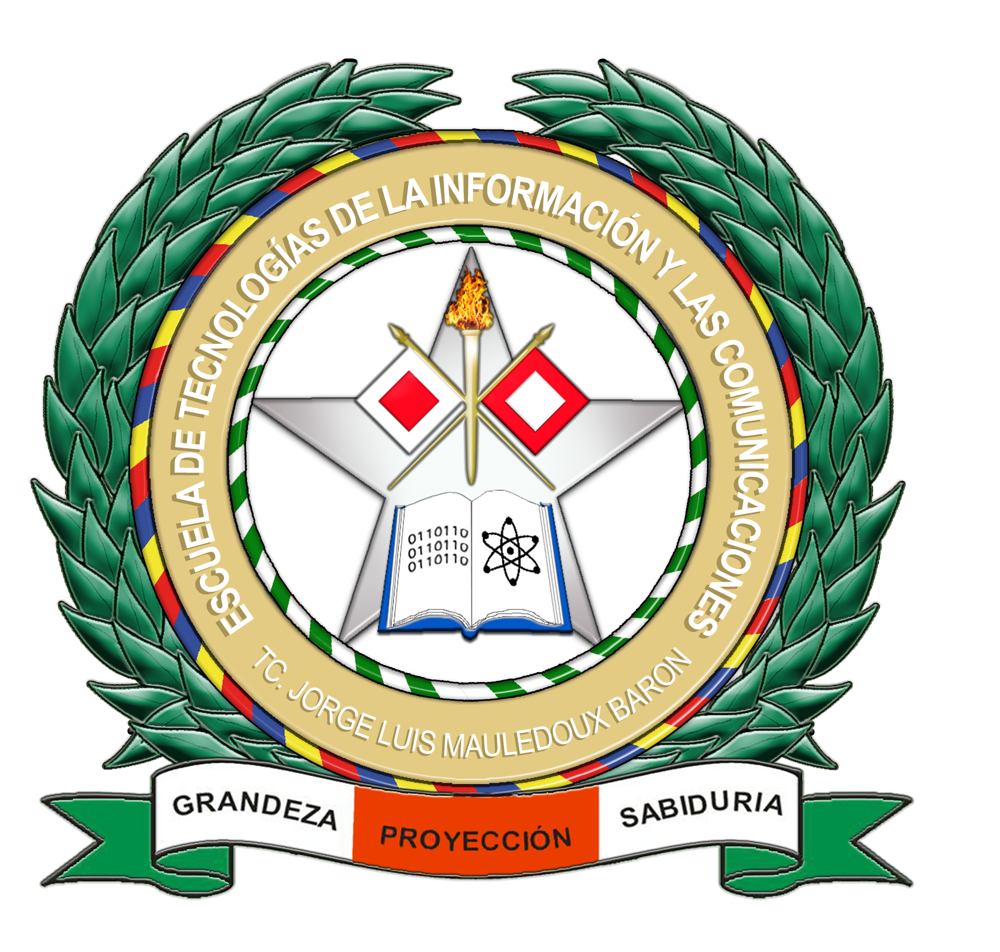

Guía para la Atención de Casos de Violencia Basada en Género
Rutas institucionales como mecanismo de prevención, atención, protección y acceso a la justicia.

“la no naturalización de comportamientos violentos, es un compromiso de la policía nacional de Colombia”